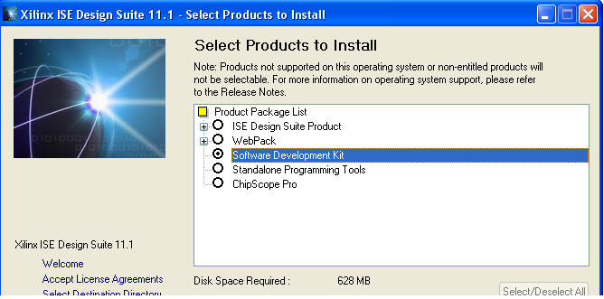
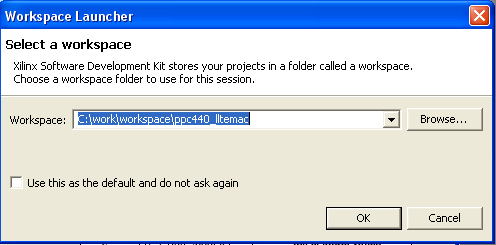
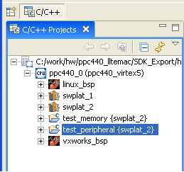
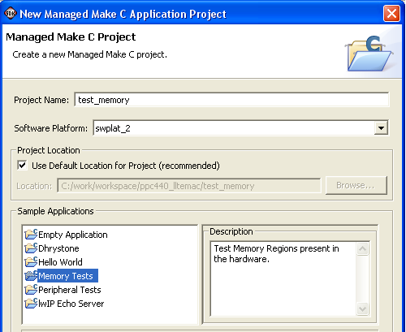
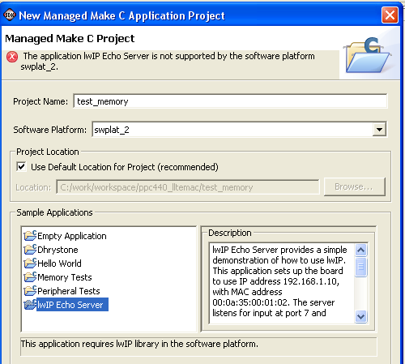
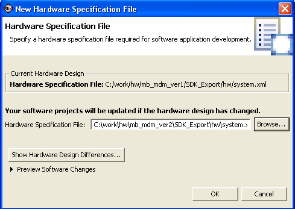
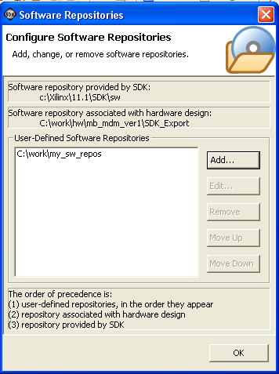
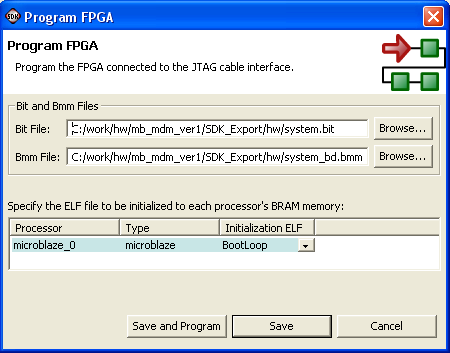
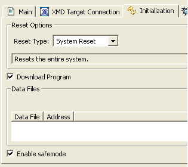
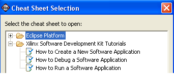

New Xilinx Software Development Kit Install Package
SDK is available as a separate installation package in the 11.1 release, which does not require installation of Xilinx® ISE® Design Suite or the Xilinx Embedded Design Kit. The separate installation of SDK includes all features required to develop and debug software applications on Xilinx embedded processors, including GNU-based compiler toolchain, GNU debugger (GDB), drivers for Xilinx IPs, libraries for networking and file handling, POSIX compliant kernel library, and a rich IDE for C/C++ development and debugging. By not requiring the installation of ISE and EDK, the separate installation package significantly reduces the amount of installation space (by 90%) required for software development.

Support
for
Easy Archiving of Hardware Files
from XPS
The files required from Xilinx Platform Studio
(XPS) have been clearly defined by the Export flow
in XPS. This allows for easy archiving of hardware files for SDK and
sharing between hardware and software users.
Improved Hardware Design Report
From the hardware design report, you can now access datasheets for all IPs in the system.
Software Workspace Can be Located Anywhere
The SDK workspace can now be located anywhere in the system, allowing for easy organizing of hardware and software files in the project. It also allows the hardware and software team to work independently.

Auto-Detection of Hardware Changes
Support for Multiple Software Platforms and BSPs

Improved C/C++ Projects View
Simplified BSP Configuration

Create Test Programs

Create Sample Applications
- Hello World - C program to print hello world
- Dhrystone - Dhrystone synthetic benchmark program
- lwIP Echo Server - Provides a simple demonstration of how to use lwIP TCP/IP stack
- XilKernel POSIX Threads Demo - Provides a simple demonstration of how to create multiple POSIX threads and synchronize between them using XilKernel

Support Application Development for Third-Party OS
Portability of Software Projects
You can now export and import software projects to any workspace and any host platform. Changes have been made to the Managed Make flow to support this capability.
Importing of Software Projects
The Existing SDK Project into Workspace command in the Import dialog box now allows you to search for all projects under a specified location and import any projects (software platform, BSP and application) found at once. You can now also import existing projects from TAR and ZIP archive files.
Re-Target Software Projects to Different Hardware
You can now re-target the software projects in the workspace to another similar hardware system. The changes in the hardware system can be viewed at any time and the changes made to software projects are listed during re-targeting. This helps the software users to work with different versions of hardware and use the same software workspace.

User Software Repository

Flexibility in Using FPGA Bitstream
The Tools > Program FPGA command can be used to specify any FPGA bitstream to use for programming. This allows you to work with multiple bitstream versions.

Configure JTAG Settings
Safe-Mode
Application
Debugging

Processors
SDK can now stop a MicroBlaze™ processor when it goes into a blocked state due to incorrect access, FSL access, or invalid bus access. This requires the latest version of MicroBlaze processors (Versions 7.20.a and above).
Command Auto-Completion
Xilinx MicroProcessor Debugger (XMD) now supports command auto-completion and history. This is supported only when XMD is launched using the command line. Note that this does not work inside the SDK IDE (XMD Console).
Ability to Set Breakpoints Before Main Function
Updated Documentation and New Cheatsheets

Updated
JRE Version
Integration with Xilinx System Generator